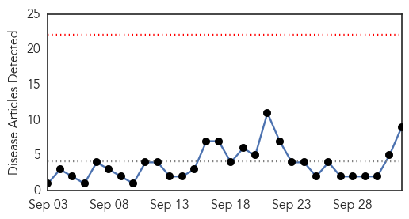
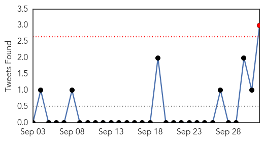

30 Day Trends
Web: 0 alerts, 0 warnings
Twitter: 1 alerts, 0 warnings
Top Articles:
- 1.000
- Stories tagged with "Haiti"
- 0.992
- Greece urges health precautions after suspect cholera case on Kos
- 0.991
- Greece urges health precautions after suspect cholera case on Kos
- 0.965
- Greece urges health precautions after suspect cholera case
- 0.925
- Kenya - Cholera Outbreak (MDRKE035): Operations Update no.2 - Kenya
- 0.895
- Greece urges health precautions after suspect cholera case on Kos
- 0.863
- Gov’t Survives $3.8m Fine to South African Company
- 0.731
- Greece urges health precautions after suspect cholera case on Kos
- 0.710
- Migrants accused of bringing cholera to Kos as tourist gets disease
Top Tweets:
- 0.699
- RT: tbt Excellent infographic from on the cholera epidemic still raging in Haiti: https://t.co/CSFmQ76…
- 0.648
- ... for spreading cholera to Haiti 2 the tune of 9400 lives lost" at 15:20.
- 0.616
- RT: "Our collective sanctimony rings hollow when the shirks its undeniable resp. for spreading cholera in Haiti" StVince…
Web/News Articles
Tweets
Article Locations

Article Confidences